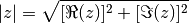

Welcome to project’s documentation!
Enter search terms or a module, class or function name.
Todo
Add a modulus_squared function.
proj.
sum_diff
Calculate the sum and the difference of two variables.
sum of a and b
difference between a and b
# Examples sum(1, 3) # output 4, -2 sum(1+1j, -1j) # output 1, 1+2j
modulus
Calculate the modulus of a complex number . The modulus is given by:

Note
Works for real variables too.
 .
The modulus is given by:
.
The modulus is given by: